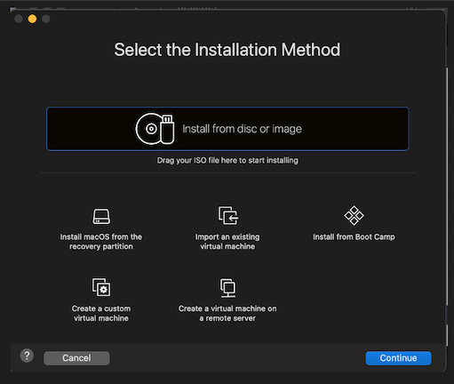

Prerequisites:
for VMware Fusion and Windows Server 2022.

-
Step 1:
- Download and install VMware Fusion
from the official VMware website.
Open the application by running the .dmg file
I'm a technically skilled IT professional with hands-on experience supporting over 1,000 users in a
complex enterprise environment. My work focuses on endpoint management, system automation, and infrastructure
support across Windows, Linux, and macOS platforms. I'm certified in AWS, A+, Network+, and Security+, and hold
a degree in Systems Administration and Cloud Computing.
Outside of work, I run a self-hosted homelab (Proxmox, pfSense, Pi-hole, Grafana) and build custom tools using PowerShell and Linux to
improve workflows, harden systems, and reduce manual overhead. I'm passionate about open-source tech, process
improvement, and using automation to solve real-world problems.
• Provide Tier 1 & 2 support to 1,000+ users across a research and corporate environment,
resolving complex software, hardware, and account issues across Windows, Linux, and macOS systems.
• Administer and troubleshoot user access, remote connectivity, and group policies
using Active Directory, Entra ID (Azure AD), and Intune on a daily basis.
• Handle security tickets and identity management workflows in collaboration with the
cybersecurity team; perform endpoint hardening and remote desktop access configuration.
• Manage IP addressing, DNS entries, and DHCP records via BlueCat IPAM, and coordinate
with the network team to support infrastructure-level issues.
• Support and upgrade hardware in the field, including encrypted HDD-to-SSD migrations,
TPM/BitLocker configuration, and firmware updates.
• Designed and implemented three custom PowerShell scripts to standardize BIOS settings,
monitor daily uptime, and assess Windows 11 upgrade readiness—boosting lab reliability,
reducing ticket volume, and enabling proactive system maintenance.
• Advanced IT expertise through certification preparation, hands-on home-labs, and completing final coursework in system administration and cloud computing, ensuring readiness for a successful career in IT.
Windows Active Directory Documentation
How to install Windows Active Directotry